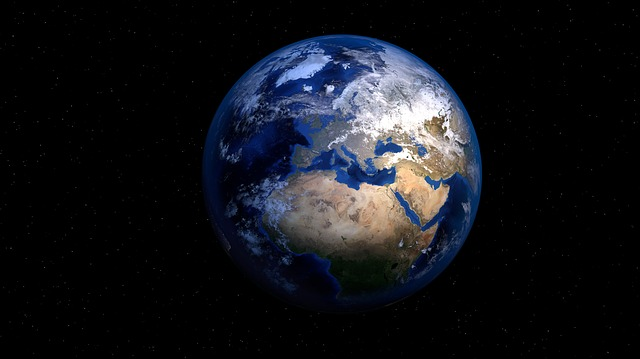

Evren'de Yalnız Mıyız?
"Yıl 1877’diydi ve her on yedi yılda bir olduğu gibi Mars, Dünya’ya en yakın konumuna gelmişti. Bu teleskop teknolojisinin yeni gelişmekte olduğu bir çağda gökbilimciler için bulunmaz bir fırsattı ve bu fırsat çok büyük bir yanlış anlaşılmayı peşinde getirecekti. Bu yakınlaşma esnasında İtalyan astronom Giovanni Schiapalli zamanın en iyi teleskoplarından bitiyle Mars’ı gözlemliyordu ve birden gezegen yüzeyinin girifit, yalın çizgiler barındırdığını fark etti. Schiapalli bu çizgileri İtalyanca ‘yiv, oluk’ anlamına gelen canali kelimesiyle nitelendirdi, ancak sorun, bu kelimenin İngilizcede mühendislik yapımı kanalları betimlemek için kullanılan canals olarak çevrilmesiyle başladı."
Mars’ta kanallar olacağı fikri Amerikan astronom Percivall Lowell tarafından hızla devralındı ve Lowell kendi adına kurdurduğu büyük rasathanede zamanını Mars’ın yüzeyini araştırmaya ayırdı. Mars gezegeninin birbiriyle kesişen tek ve çift düzgün çizgiler şebekesiyle kaplı olduğunu, bu çizgilerin büyük mesafeler boyunca uzandığı ve bu yüzden çok yüksek mühendislik ürünü kanallar olduğu fikrine kendini kaptırmıştı. Fikir hızla yayıldı ve dünyanın dört bir yanından gözlemciler bu kanalları haritalandırma çalışmalarına başladı. Kanalları gördüğünü ileri sürenler olduğu kadar itiraz edenler de vardı ancak Lowell ve takipçileri atmosfer türbülansı ve istikrarsızlığın gözlemi bazen imkansız hale getirdiğini söyleyerek insanları etkilemeye devam ediyordu. Lowell daha da ileri giderek Mars’ta çok büyük bir kuraklık yaşandığını, kanalları suyu muhafaza etmekte kullanıldığını ve bu kanalların kesiştiği yerlerde şehirlerin yer aldığını ortaya sundu. Bu düşünceler uzun bir süre ortalıkta dolanacak, H.G. Wells Edgar Rice gibi bilim kurgu yazarlarına ilham olacak, milyonlarca insana ulaşacak ve sayısız insanın bu düşünceleri, Mars’ta zeka bulunduran canlıların olduğuna ikna edecek ve inandıracaktı. Hayır, Mars’ta zeka ürünü kanallar yoktu. Mars’ta insanlar üstün teknolojiye sahip canlılar yoktu.
Mars’ta şehirler yoktu ve kanallar kimseye su taşımak amacıyla kullanılmıyordu... *** Yazıya bu eğlenceli, yanlış anlaşılmalar ve uçuk hayal güçleriyle dolu ancak etkileyici ve önemli olayla başlamak istedik. Lowell’in düşünceler büyük ölçüde aptalcaydı ve abartıydı, ancak o yada bu şekilde bu düşünceler pek çok gökbilimciyi ve gökyüzü tutkununu etkileyecek, içlerinde bulunan yeryüzü dışı canlı bulma umutlarını tetikleyecekti. Belki de günümüzde bu uğurda yapılan girişimlerin çoğunun altı yatan istek ve arzuyu, bu tür yanlış anlaşılmalara borçluyuz, kim aksini söyleyebilir ki?
